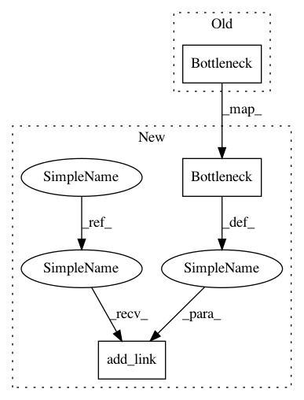

3be1872f143ff15ad0b32932d19415025a7d2e4b,chainercv/links/model/resnet/building_block.py,BuildingBlock,__init__,#BuildingBlock#,30
Before Change
conv_shortcut=True, stride_first=stride_first)
for i in range(n_layer - 1):
name = "b{}".format(i + 1)
bottleneck = Bottleneck(out_channels, mid_channels,
out_channels, stride=1,
initialW=initialW, conv_shortcut=True)
setattr(self, name, bottleneck)
class Bottleneck(chainer.Chain):
After Change
def __init__(self, n_layer, in_channels, mid_channels,
out_channels, stride, initialW=None, stride_first=False):
super(BuildingBlock, self).__init__()
self.add_link(Bottleneck(
in_channels, mid_channels, out_channels, stride,
initialW, conv_shortcut=True, stride_first=stride_first))
for i in range(n_layer - 1):
self.add_link(Bottleneck(
out_channels, mid_channels, out_channels, stride=1,
initialW=initialW, conv_shortcut=False))
def __call__(self, x):
h = x
for func in self:
In pattern: SUPERPATTERN
Frequency: 3
Non-data size: 3
Instances
Project Name: chainer/chainercv
Commit Name: 3be1872f143ff15ad0b32932d19415025a7d2e4b
Time: 2017-10-08
Author: yuyuniitani@gmail.com
File Name: chainercv/links/model/resnet/building_block.py
Class Name: BuildingBlock
Method Name: __init__
Project Name: chainer/chainercv
Commit Name: 7c4af63f70cb78fea8163d9839b4f437c8cc319e
Time: 2017-12-18
Author: yuyuniitani@gmail.com
File Name: chainercv/links/model/resnet/building_block.py
Class Name: BuildingBlock
Method Name: __init__